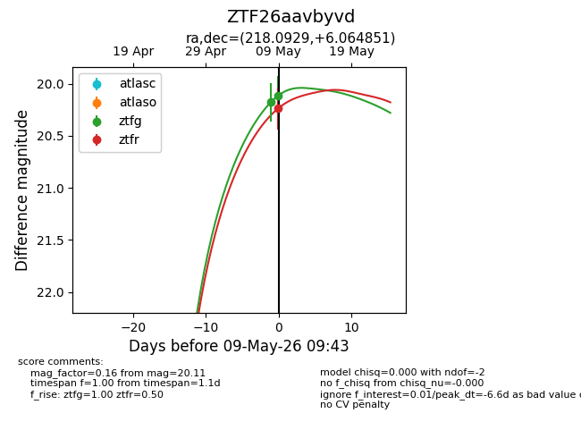
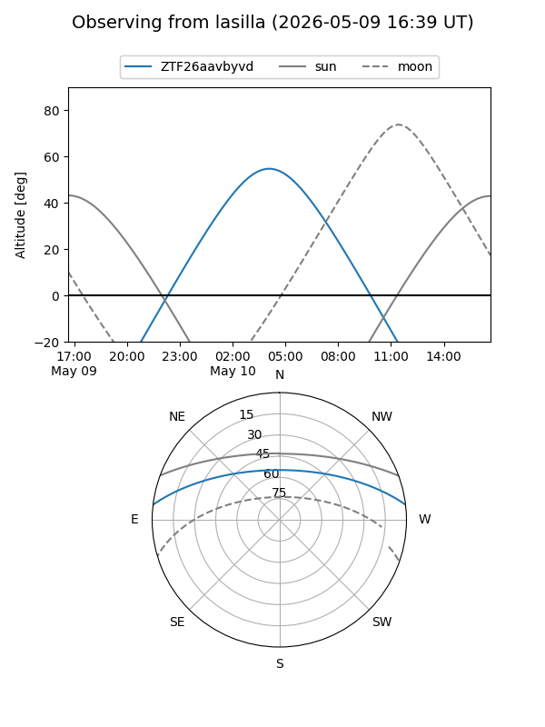
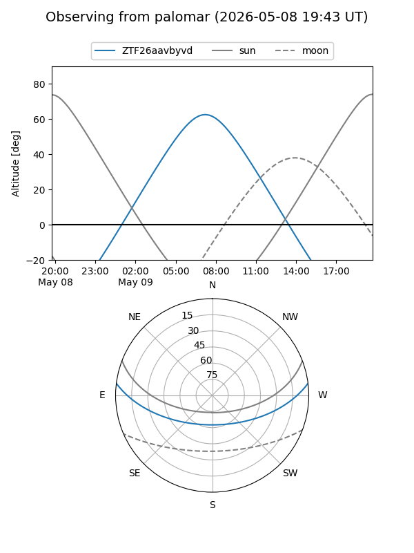
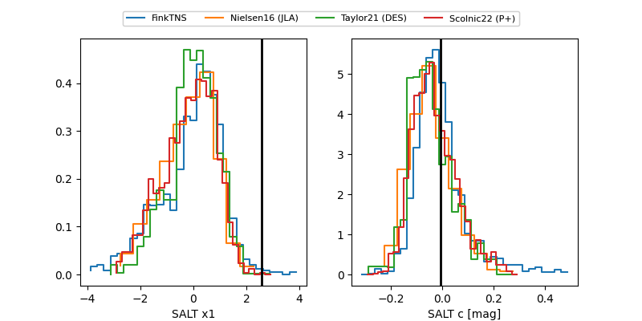

ZTF26aavbyvd
Target ZTF26aavbyvd at 2026-05-09 09:44
Aliases and brokers:
FINK: link
Lasair: link
ALeRCE: link
alt names
ZTF26aavbyvd (ztf,fink_ztf)
Coordinates:
equatorial (ra, dec) = 218.0929,+6.06485
equatorial (HMS+DMS) = 14:32:22.30,+06:03:53.46
galactic (l, b) = (356.2187,+58.07431)
Flags:
Photometry:
last ztfg=20.11, ztfr=20.24
2 ztfg, 1 ztfr detections
Lightcurve

Visibility


Additional plots
